Nyzo version 558 (commit on GitHub) adds an HTML-based user interface to the client.
This version affects primarily the client.
This version does not include a client command for creating NTTP sender data. That command will be included in the next version.
This version introduces a large volume of code, but the code does not affect the core operation of the blockchain, so it does not need to be held to the same standards of scrutiny and testing as such code would. Please be aware that, while this interface is accessible in a web browser, it should not be run on a remote server. Also, if someone starts a server with this code, do not use it for anything involving the use or generation of private keys. Unlike the Javascript wallet and key tools on the nyzo.co server, all processing is done here on the server side, and private keys are transmitted over an unencrypted connection. For the nyzo.co tools, private keys are never transmitted to the server, and the connection is encrypted.
As this is the first release version of this interface, it will likely be awkward to use and often have inadequate feedback about progress and errors. These issues will, of course, be improved in future updates.
In the circulation script of LockedAccountManager, a CommandOutputConsole object is now created to print the table. The printing methods in ConsoleUtil now accept an argument that allows output to be printed immediately to the console or saved for delivery to an HTML client.
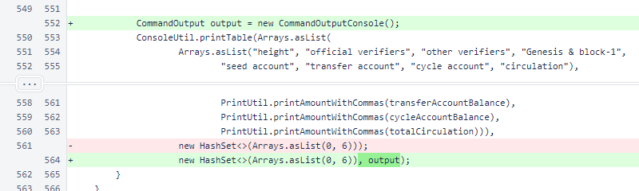In the RunMode enumeration, the values have been reordered to be in alphabetical order. Previously, they were ordered chronologically by time of introduction to the code. This was confusing and difficult. The standard practice in the Nyzo code, and a good practice in all code, is to try to use enumerations in the same order as they are specified. This improves readability of code, making it easier to check if all enumeration values have been covered. Consistency of this ordering is much easier to maintain when a reasonable, easy-to-remember ordering is chosen.
Also, an override suffix has been added. This is currently used to specify run-mode specific web listener ports. Previously, code handled just the case of the web listener port. The suffixes were moved to the enumeration so they could be reused for other preferences.

In Client, several methods have been modified to use the new CommandOutput objects. These are the only changes in the Client class.
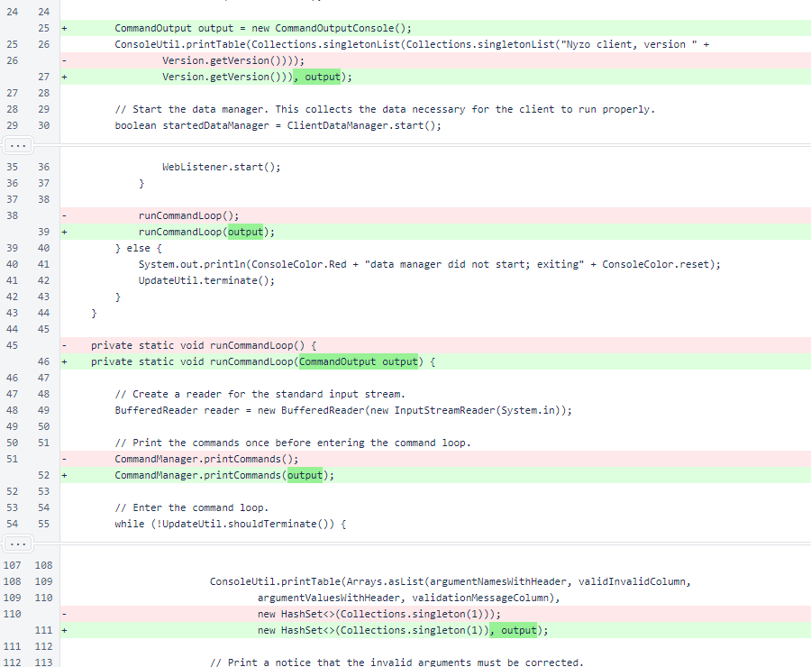ClientController manages the new interface. The commandOutputEndpoint is used to deliver Ajax updates of the console output from client commands, and the commandCompleteString signals that no more output is available for a command.
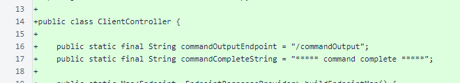The buildEndpointMap() method adds an endpoint at the root (/) for listing commands, an endpoint for delivering console output, and GET and POST endpoints for each command. As the comment explains, the GET endpoints deliver forms for collecting command arguments, and the POST endpoints accept those forms.
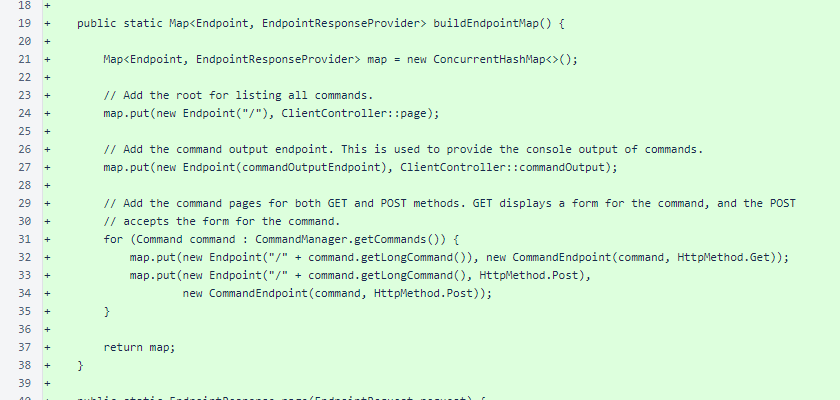The page() method provides the main menu for the client.
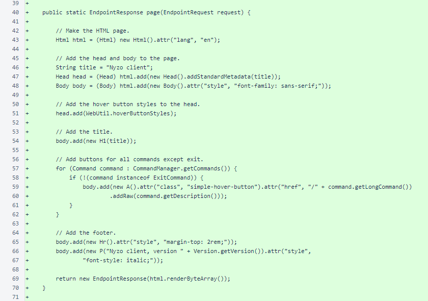The use the new interface, set start_web_listener=1 in /var/lib/nyzo/production/preferences and run the client. After the client has initialized, open localhost or 127.0.0.1 in a web browser.
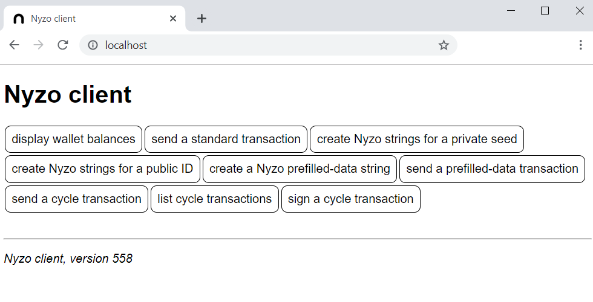The commandOutput method serves the output of a running command, referenced by a random identifier assigned by the CommandOutputWeb object. If a command is not found, the value of commandCompleteString is returned to let the client know that no more output is available. If the command is found but no new output is available, an empty response is returned.
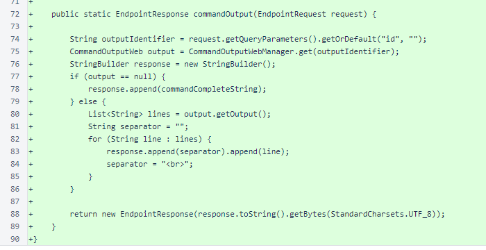The updateMesh() method in ClientDataManager now uses MeshRequest15 instead of FullMeshRequest41. This drastically improves the ability of the client to properly track the blockchain.
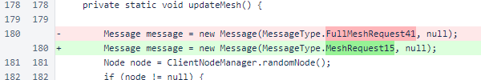In ClientTransactionUtil, several methods have been modified to route output to CommandOutput objects. These are the only changes in the ClientTransactionUtil class.
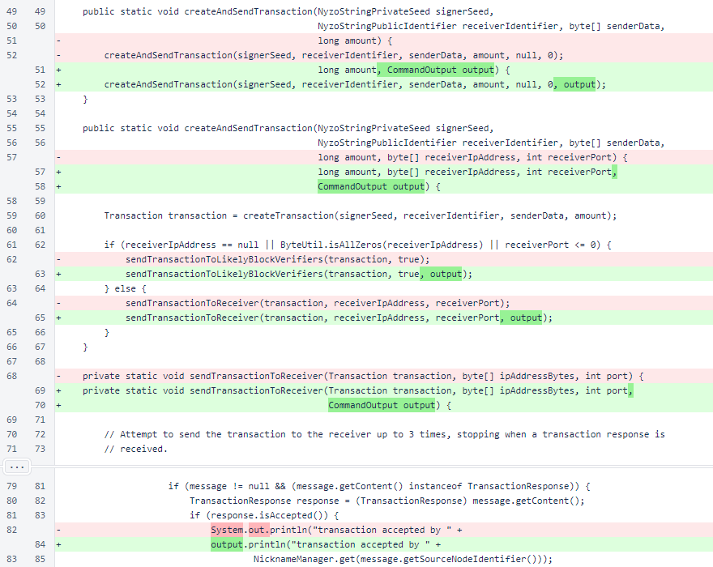CommandEndpoint encapsulates the functionality for the pages that allow client commands to be run. Each CommandEndpoint references an HttpMethod (GET or POST) and a client command.
The actionKey and actionValue... constants are used to determine how a form POST should be interpreted.
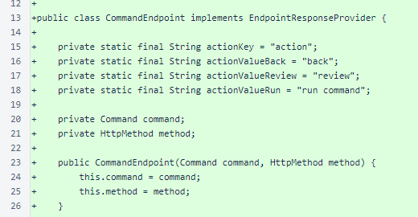The getResponse() method processes the form data for POST requests, and it delivers the form for GET requests.
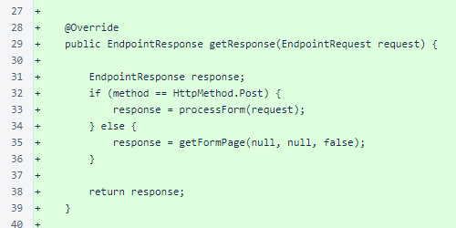The getFormPage() method generates the form. The method accepts a ValidationResult to provide feedback on invalid argument values, and it accepts a list of valid argument values so a confirmation page can be displayed for commands that require confirmation.
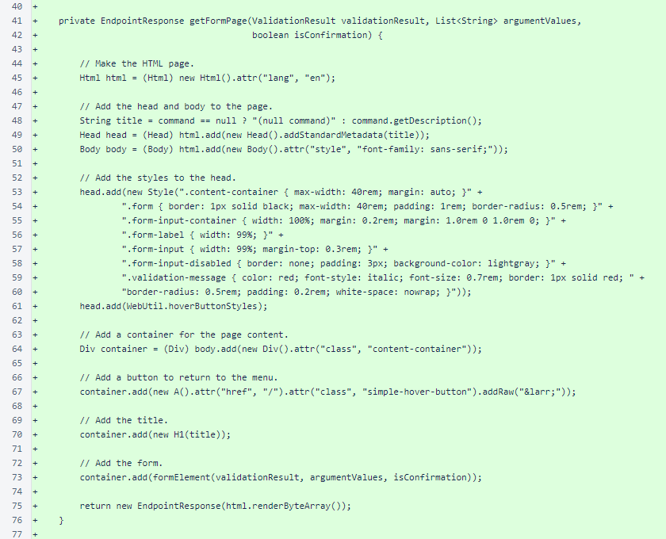Generation of the form element is encapsulated in a separate method to improve readability. Inputs are added for each argument in the command. If a previous argument value is available, it is added to the proper input. If a validation message is available, it is displayed. If the form is presented for confirmation, all inputs are set to read-only.
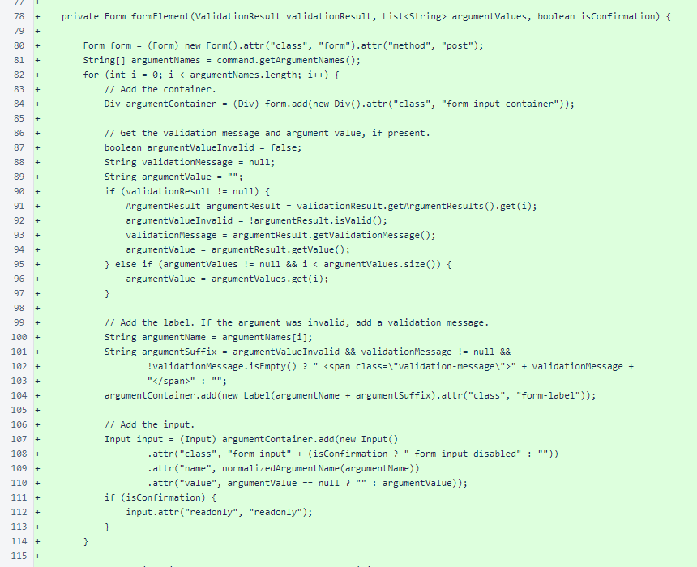Confirmation forms are provided with a back button to allow return to the editable version of the form. All forms are provided with a button that allows advancing to the next step: confirmation or running the command. The actionValue constants are used here to signify which step the form represents.
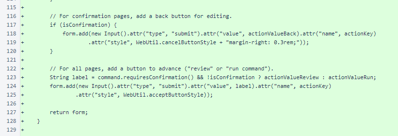The processForm() method collects the arguments, validates them if necessary, and presents the appropriate next step. If arguments need to be corrected or confirmed, the form is presented again. If the command is ready to run, the command progress page is presented.
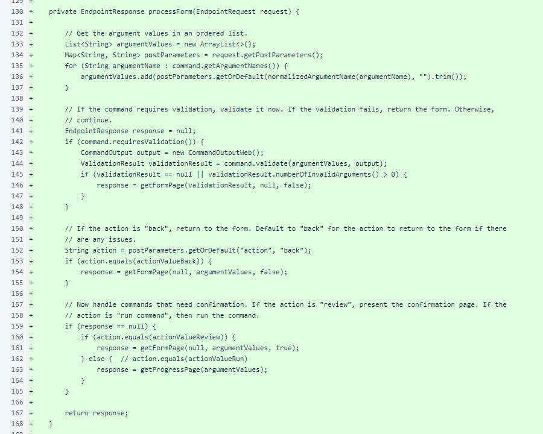The getProgressPage() method creates a page with a single div for displaying the command output. The command is started in a separate thread, and it is provided with a CommandOutputWeb object for logging its results. The identifier of the CommandOutputWeb object is passed to a script to allow the page to fetch output asynchronously as it is produced by the command.
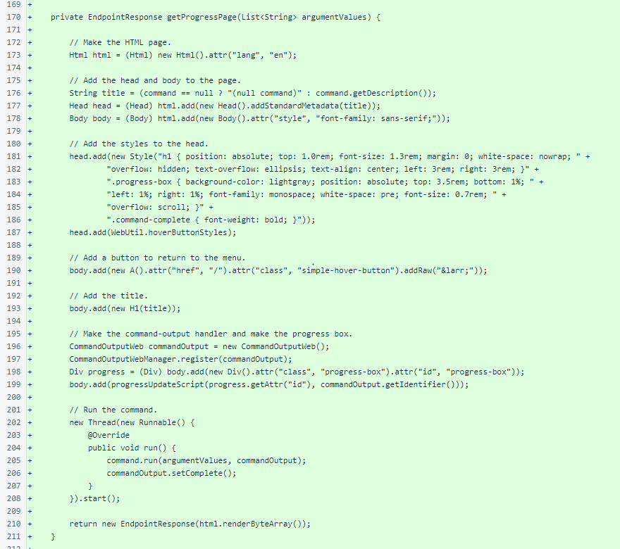The normalizedArgumentName() method is used in form generation to process command argument names into forms that are suitable for the name property of input elements. The same method is used to process command argument names to retrieve argument values when a form is submitted.
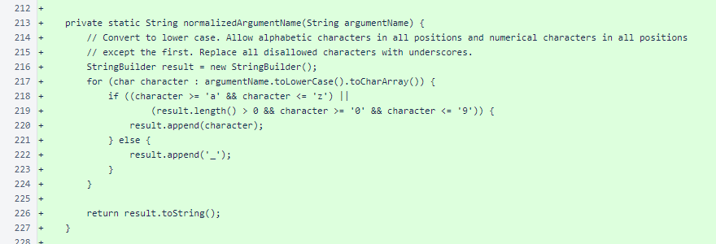The progressUpdateScript() method provides the script that retrieves command output from the server (where the server, in this case, is the locally running Java client). The script attempts to retrieve new output every second, and it appends that output to the end of the progress div. When the commandCompleteString value is received, the update process is ended.
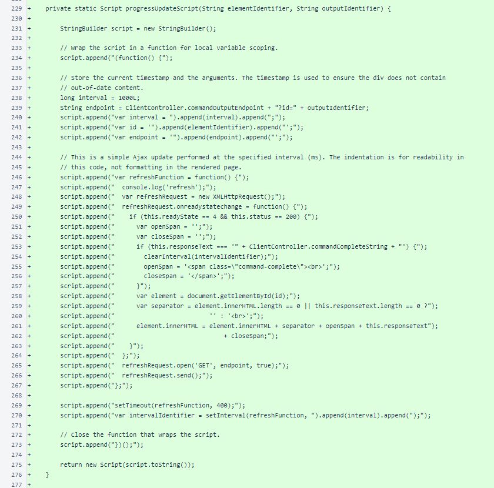CommandManager has been modified to accommodate CommandOutput objects.
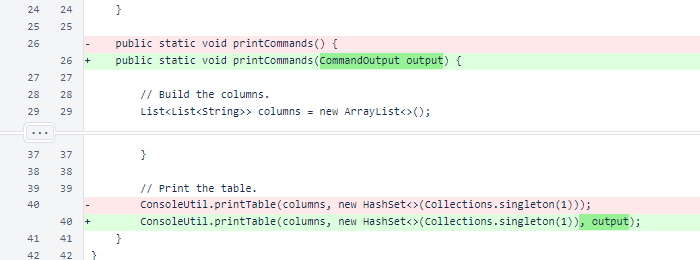The CommandOutput interface offers print() and println() methods.
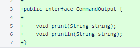CommandOutputConsole implements the CommandOutput interface, passing all output to System.out.
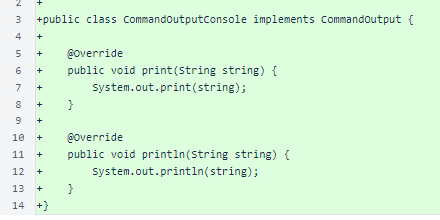CommandOutputWeb also implements the CommandOutput interface, storing the lines of output in a Map for later retrieval from a web browser. The identifier is a 9-digit String decimal representation of a number generated by a weak (not cryptographically secure) random-number generator. An AtomicInteger tracks the output line index, and complete is set by the command when it finishes operation. The current color state of the console, set by ANSI color codes encountered in the output, is stored in textColor and backgroundColor.
To reduce the potential for memory-consumption issues, a maximum map size of 1000 is specified.

An accessor is provided for identifier, and print() and println() implement the CommandOutput interface. The println() method includes a remove() method call to ensure the limit on map size is maintained.
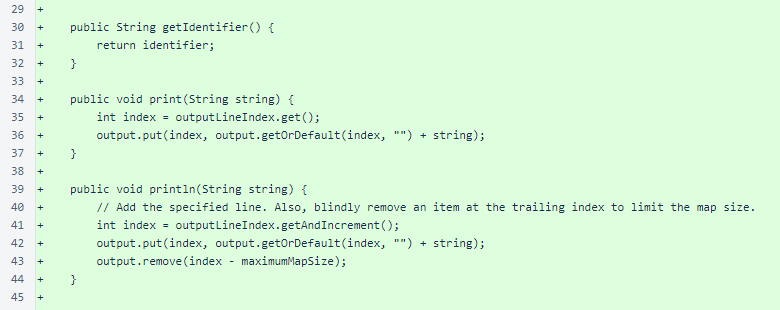The getOutput() method retrieves the output from the output map to send to the client. Lines are removed from the map as they are assembled into the response, so the same line will not be returned to the client more than once. This eliminates any need for the client to track indices, and it aggressively removes output from server memory.
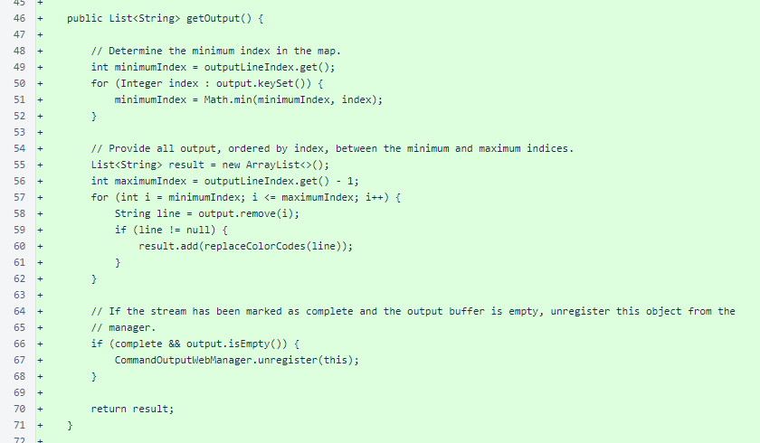The setComplete() method increments the line index and sets the complete field to true. Incrementing of the index is necessary in case the last method call before completion was a print() call, not a println() call.
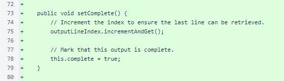The replaceColorCodes() method removes ANSI control codes representing colors and approximates their effect with HTML spans. This is nowhere close to an ANSI-compliant terminal in HTML/Ajax. But it is a simple, easy-to-understand implementation that meets the needs of the Nyzo client.
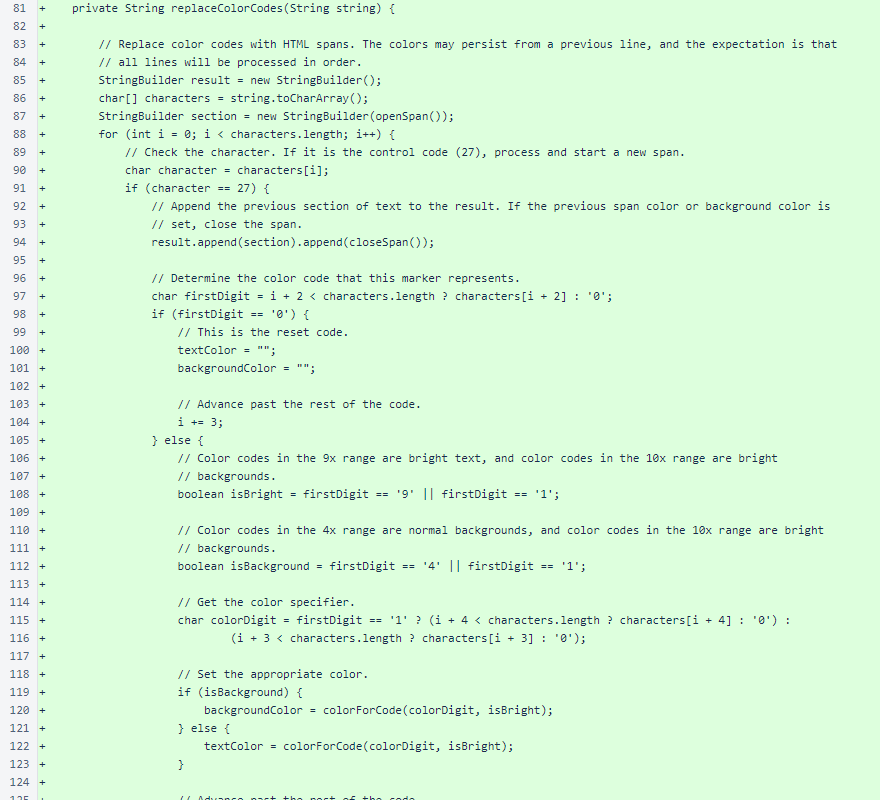The openSpan() and closeSpan() helper methods render span tags based on the current state of the textColor and backgroundColor fields.
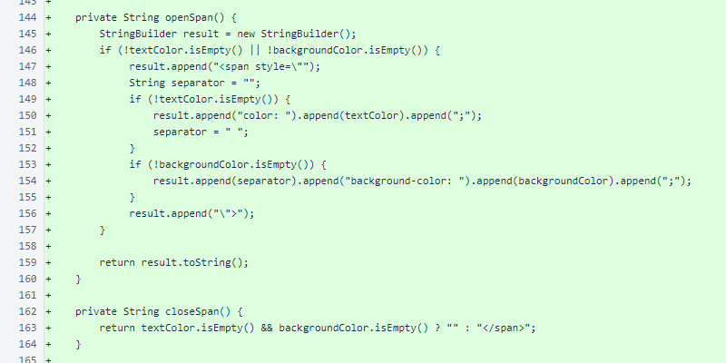The colorForCode provides approximate color values for ANSI color codes. Black is assumed to be the default color, so it is not explicitly specified. All other colors use an f value in the appropriate color channels for bright colors and an a value for normal colors.
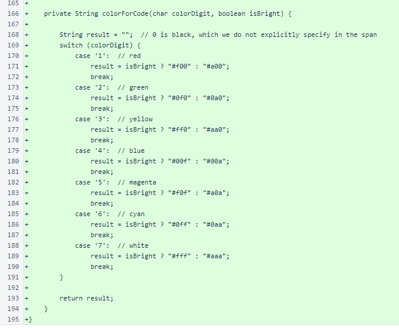CommandOutputWebManager stores commands in a map indexed on identifier. It records registration timestamps to limit how long the maps stay in memory. Note that the cleanMaps() method is only called when a new CommandOutputWeb object is registered, so an object for a long-running command will not be removed prematurely unless another command is registered.
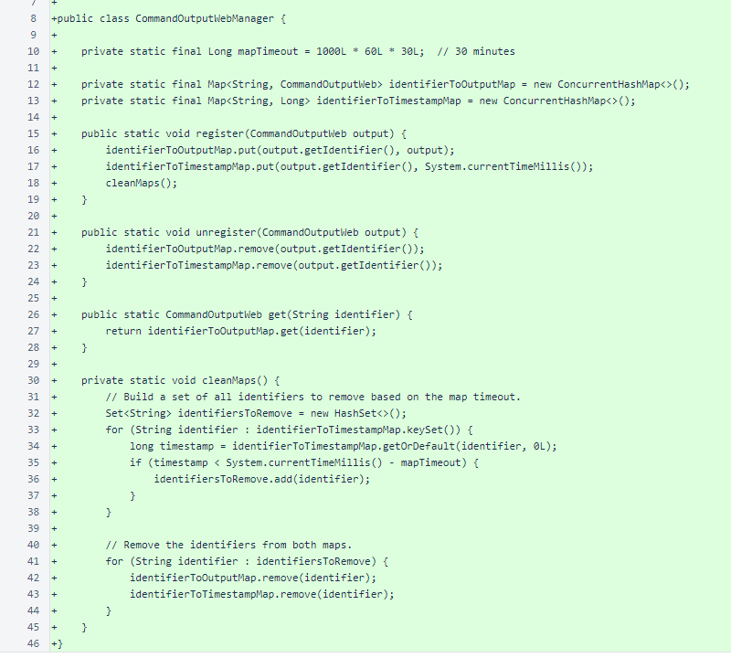In ConsoleUtil, several methods have been modified to utilize CommandOutput objects. These are the only changes in the ConsoleUtil class.
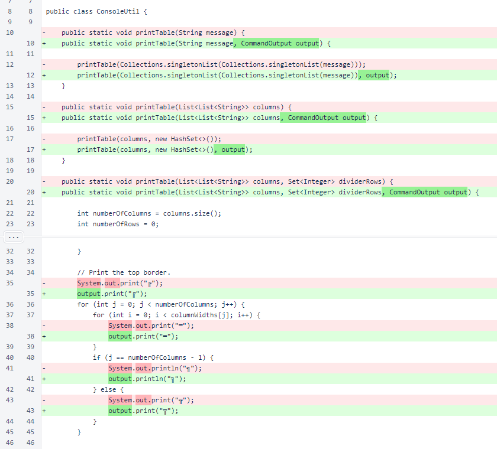The BalanceDisplayCommand has been modified to use CommandOutput objects. These are the only changes in the BalanceDisplayCommand class.
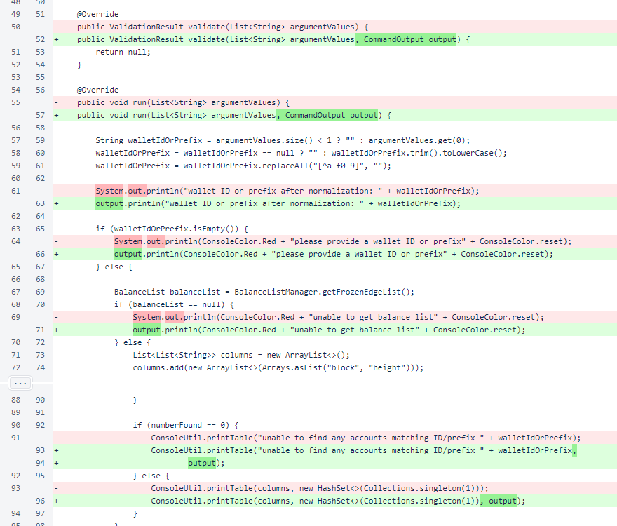The validate() and run() methods of the Command interface now include CommandOutput arguments.
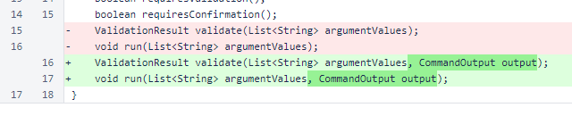CycleTransactionListCommand, along with the remainder of classes in the co.nyzo.verifier.client.commands package, have no changes other than support of CommandOutput objects. Those classes will not be explained individually. However, if you review the code changes carefully, you will find nothing other than CommandObject instances being created, CommandObject instances being passed as method arguments, and System.out.println() replacements with output.println(), where output is an instance of a CommandObject.
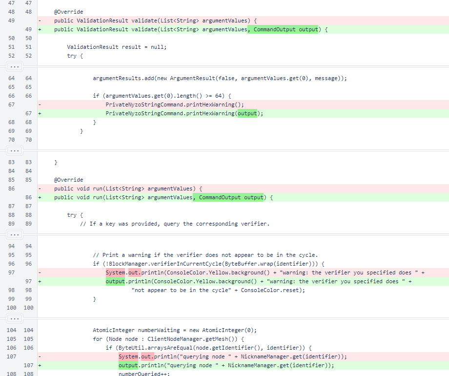In DocumentationServer, the maps for server endpoints have been changed from <String, EndpointMethod> to <Endpoint, EndpointResponseProvider>. The keys of these maps have changed from String objects containing server paths to Endpoint objects that contain server paths and HTTP methods (GET and POST). This change was necessary because the WebListener must now be able to distinguish between GET and POST for form submission.
The EndpointMethod interface was renamed to EndpointResponseProvider to improve understandability of the code. The name EndpointMethod was chosen because the interface declared a single method that implemented the behavior for an endpoint. However, in the context of endpoints, the HTTP method of an endpoint can also be reasonably called an "endpoint method," potentially leading to confusion. The new name, EndpointResponseProvider, communicates clearly the purpose of the interface while eliminating the potential for confusion that was present with the previous name.
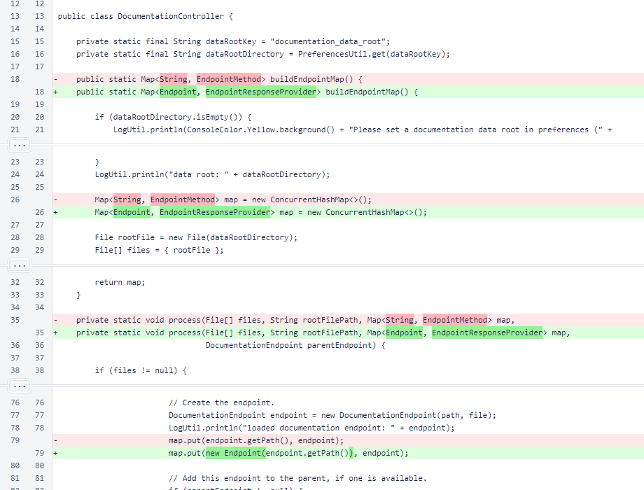In DocumentationEndpoint, the interface implementation has been changed from EndpointMethod to EndpointResponseProvider. The internal methods for producing responses were renamed to better fit the new interface method name, and unnecessary arguments were eliminated.
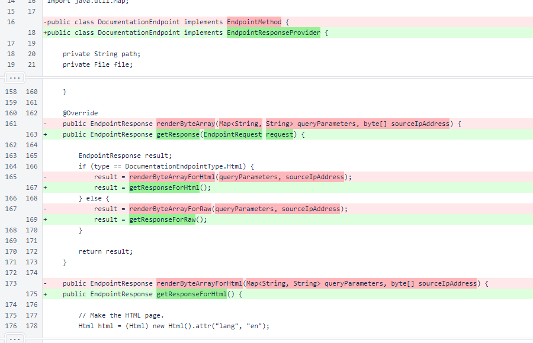The hover button styles were moved to WebUtil for reuse, and unnecessary storage of an anchor (A) reference was eliminated.

In MicropayController, the endpoint constants were changed from String objects to Endpoint objects. The one-argument constructor of Endpoint assigns a value of HttpMethod.Get for method. Also, the types in buildEndpointMap() have been updated.
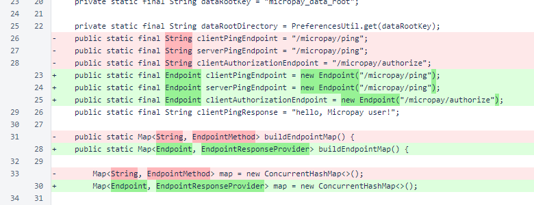The methods implementing EndpointResponseProvider were modified for the new method signature. Using the EndpointRequest class instead of separate arguments for the request fields will allow this interface to remain stable, only requiring the addition of fields to EndpointRequest as new information about the request is required.
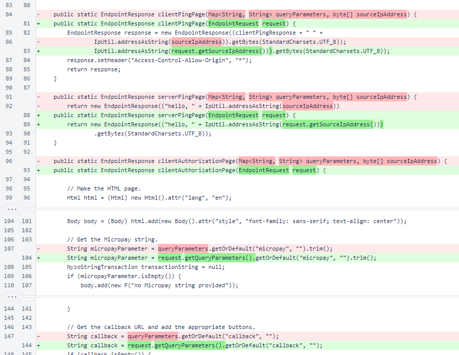Several small changes were made in MicropayEndpoint for the new EndpointResponseProvider requirements.
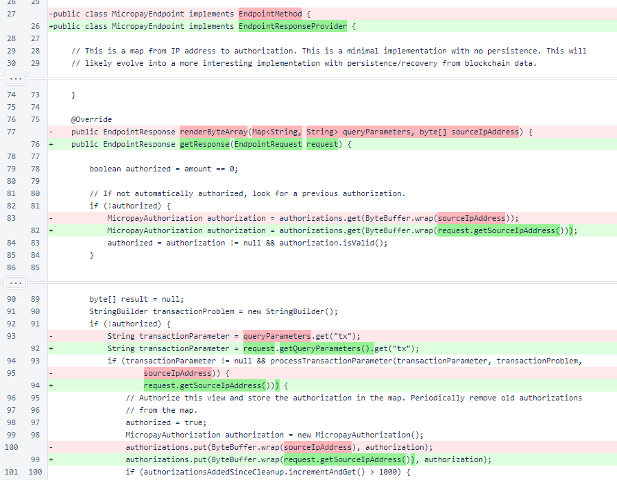The pingEndpoint type was changed from String to Endpoint, and the value of this endpoint is now used in the script. Previously, the value was unused and the same path was coded directly into the script.
The output of sendTransactionToLikelyBlockVerifiers() is sent to an instance of CommandOutputConsole, which allows it to remain in the Micropay server logfile.
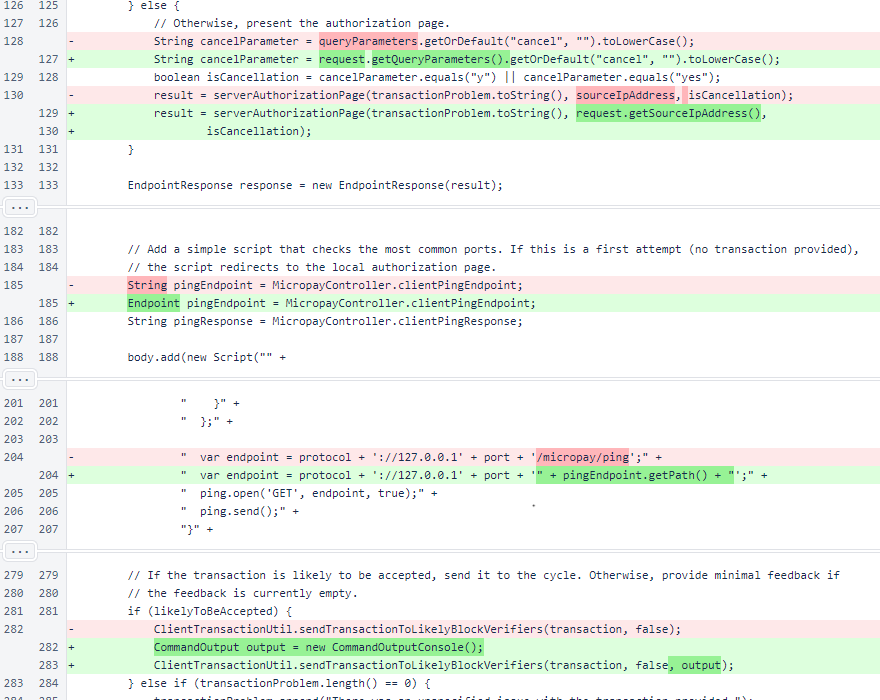CycleController was modified for the Endpoint and EndpointResponseProvider changes.
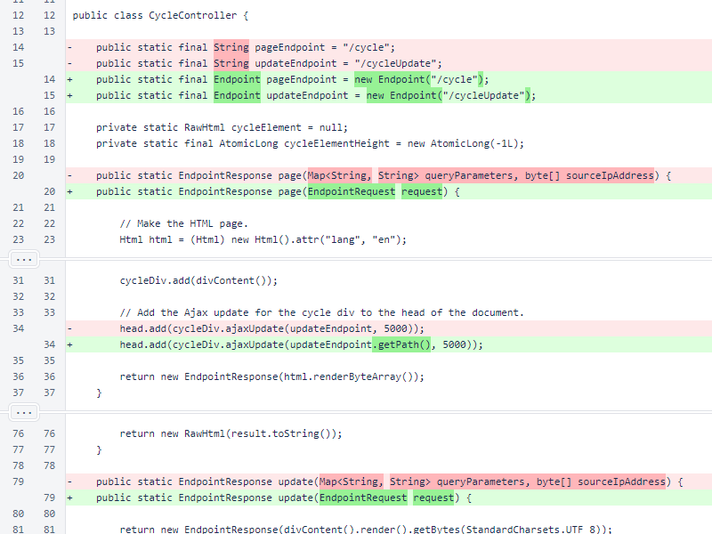The Endpoint class encapsulates a server path and an HTTP method. Due to the use of Endpoint instances in maps, implementation of hashCode() and equals() was necessary.
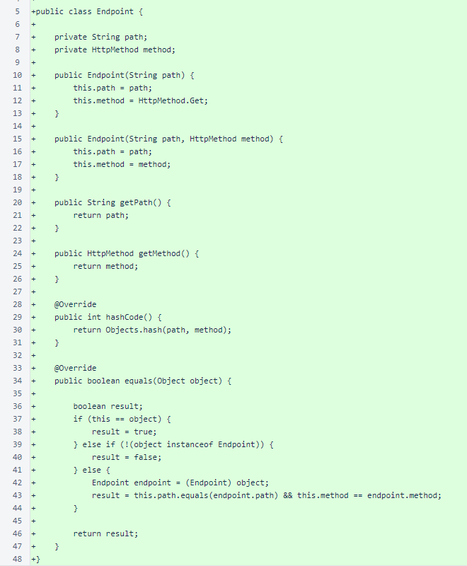The EndpointMethod interface has been removed and replaced with EndpointResponseProvider.
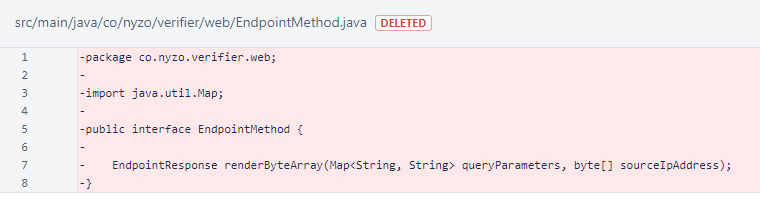EndpointRequest encapsulates the query parameters, post parameters, and source IP address of a request. Other fields may be added as other properties of a request are needed for future functionality.
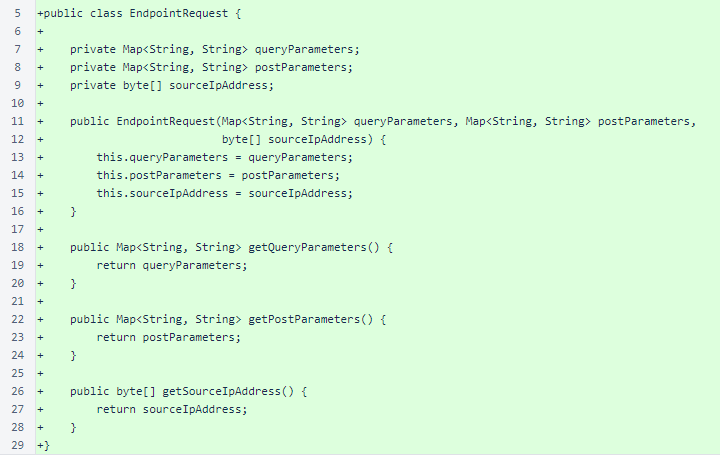EndpointResponseProvider replaces EndpointMethod.
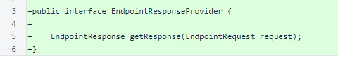HttpMethod enumerates the most commonly used HTTP methods: GET and POST. Other values may be added as needed. A forString() method provides a case-insensitive lookup of enumeration values, defaulting to GET. The toString() method provides an uppercase representation of the enumeration value.
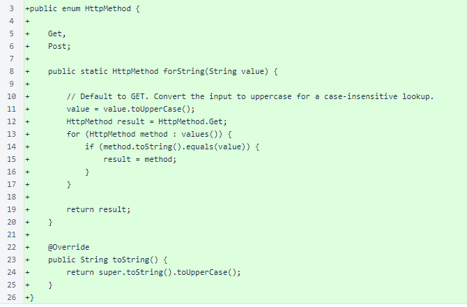SentinelController was updated for the Endpoint and EndpointResponseProvider changes.
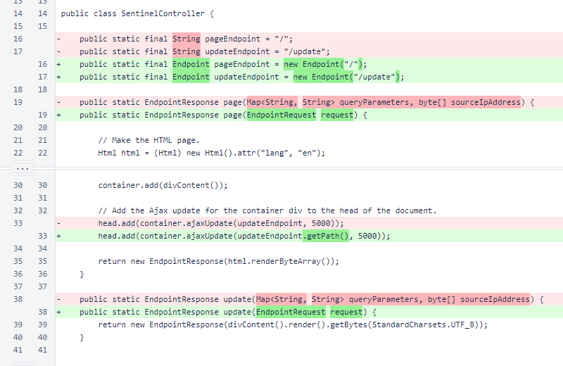WebListener was updated for the Endpoint and EndpointResponseProvider changes. Unnecessary logging was removed. The query parameters, post parameters, and IP address are extracted from the HttpExchange object and encapsulated an an EndpointRequest object.
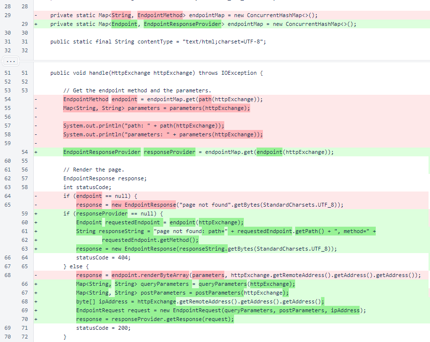The path() method has been renamed to endpoint(). The HTTP method is included in the new Endpoint response.
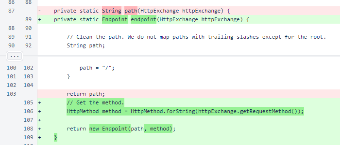The queryParameters() and postParameters() methods use the mapForString() method to structure the parameters into an easy-to-use Map.
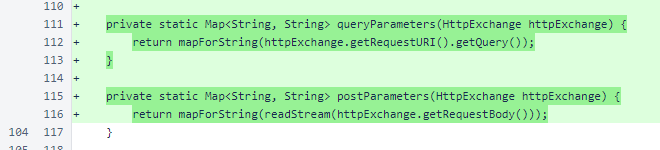The mapForString() method is a generalization of the previous parameters() method that was used only for the query string. The new WebUtil.removePercentEncoding() provides basic handling of encoded characters.
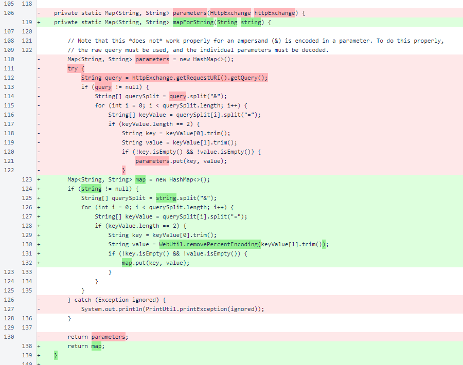The readStream() method is used to read the POST body.
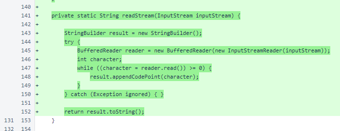The buildEndpointMap() method now uses a switch instead of an if/else over the RunMode enumeration. The cases are now ordered alphabetically, as they are in the RunMode enumeration definition. The client now uses its own endpoint map, instead of only providing the cycle page like the verifier.
The overrideSuffix is now stored on the RunMode.

WebUtil now contains the styles for hover buttons. These are currently used by both the documentation server and the client UI.
Two maps are built in a static block to aid in percent encoding and decoding.
Application of percent encoding requires nothing more than iteration over the original string, replacing appropriate characters with their encodings. Removal of percent encoding requires a few more lines of code to handle the two extra characters occupied by the percent encoding.

The Button, Form, Input, and Label classes were added for structuring HTML elements.